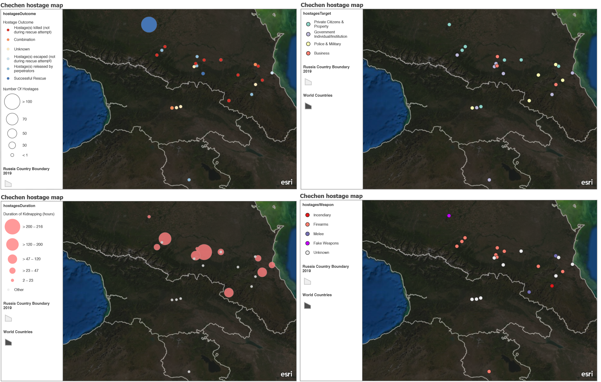

Terrorism around the Russian Border
An ArcGIS Story Map
This visual story is a type of longform infographic. The story focuses on the resistance of local terrorist groups in the Caucuses mountain region between the Black and Caspian Sea. And shed some light on terrorist activities in Eastern Ukraine (in Russia's favor).
